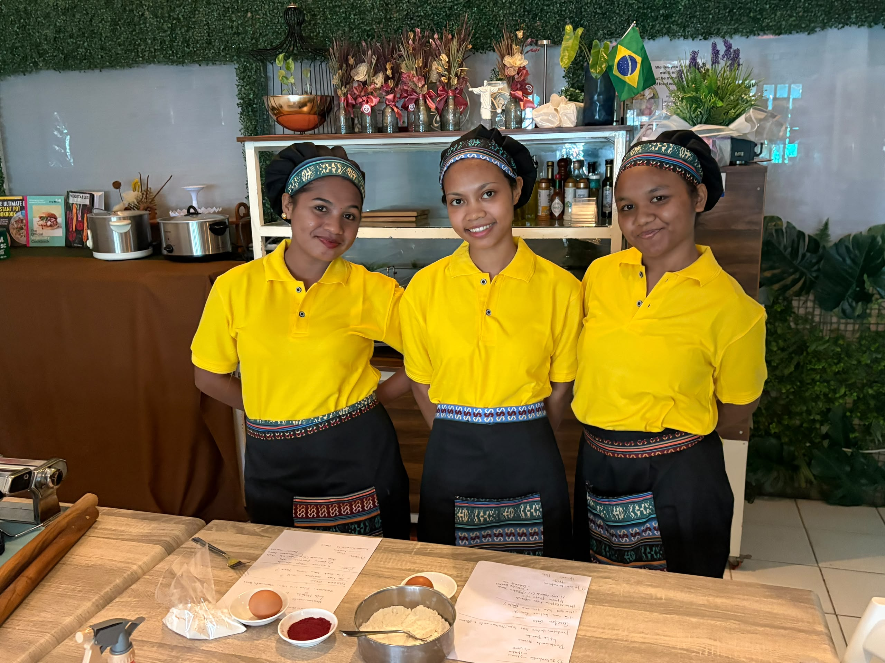
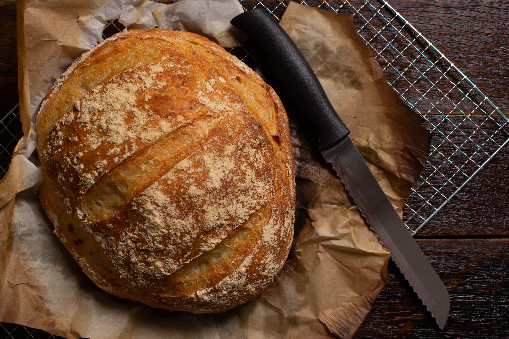
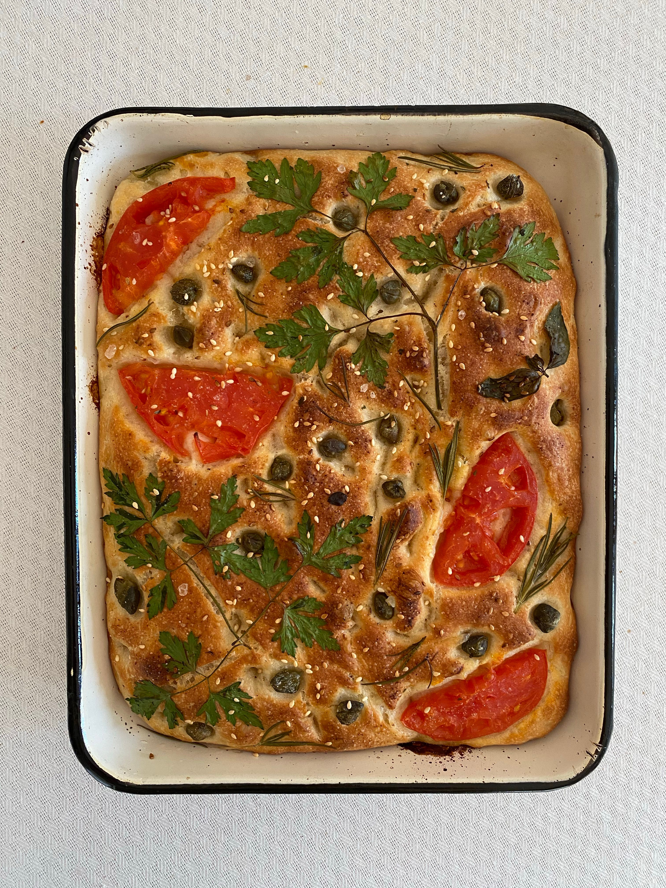
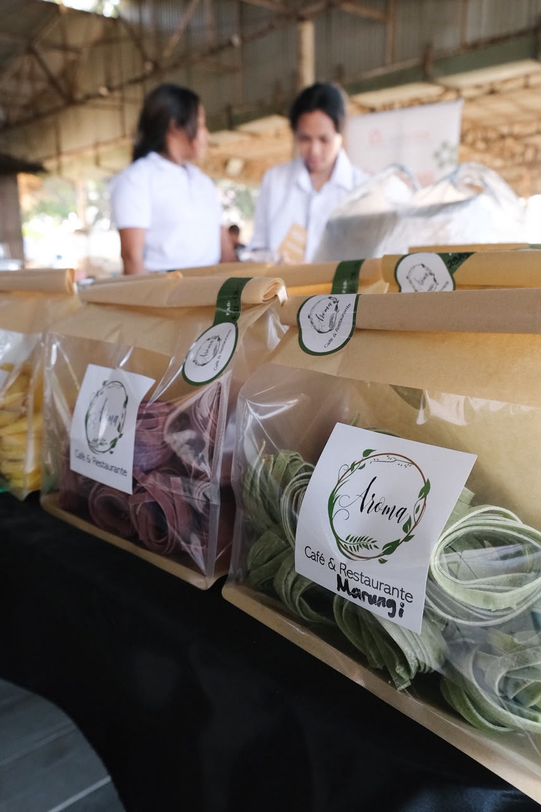
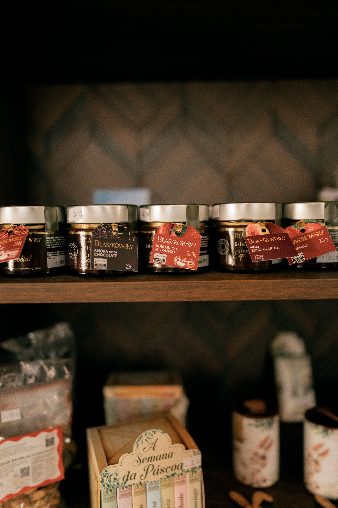

Sabores e Texturas
La Farina
Pão artesanal, focaccias douradas e massas frescas feitas com paciência, tempo e dedicação, mesmo no coração de Díli.
Feito à mão, todos os dias
Sem atalhos: pão, massa e focaccia amassados e moldados à mão, no próprio dia.
Ingredientes frescos
Trabalhamos com produtos locais e de qualidade, sem conservantes desnecessários.
Impacto social real
Cada encomenda apoia a formação de jovens timorenses da nossa equipa.
Entrega em Díli
Encomendas por WhatsApp, com entrega direta ao teu condomínio.

A equipa por traz
Quem somos nós ?
A La Farina nasceu do trabalho voluntário da Chef Pollyanna Serrano em Díli. Aqui, jovens timorenses como a Nélia e a Verônica aprendem, todos os dias, a arte da panificação, da massa fresca e da pastelaria — e transformam esse saber em produtos que chegam à tua mesa. Cada pão, cada focaccia, cada massa carrega um pouco dessa história: comida feita com cuidado, para construir um futuro novo.
Mais sobre nós!Recomendados pelo chefe

Pão Artesanal
Pão de fermentação e amassado lento, com crosta crocante e miolo macio. Do clássico ao multigrãos, feito todos os dias.
Ver mais esta categoria
Focaccias
Focaccias douradas, regadas em azeite e ervas frescas — salgadas ou doces, perfeitas para partilhar.
Ver mais esta categoria
Massas Frescas
Massa cortada e moldada à mão, no próprio dia. De fettuccine a nhoque, para um prato com sabor de casa.
Ver mais esta categoria
Molhos & Conservas
Compotas, chimichurri e conservas feitas em pequenos lotes — o toque final para qualquer refeição.
Ver mais esta categoriaComo encomendar ?
Direto do forno para a tua mesa
Escolhe
Escolhe os produtos na loja e toca em "Adicionar"
Confirma
Confirma a tua lista na barra do carrinho.
Finaliza
Toca em "Finalizar" e a encomenda é enviada.
As nossas avaliações

A La Farina está a dar os primeiros passos em Díli.
Adorávamos saber a tua experiência — o que gostaste, o que podemos melhorar. Escreve-nos por WhatsApp, leva só um minuto.
Deixar a minha opiniãoContacto
Fala connosco
Tens dúvidas, encomendas especiais ou queres saber mais sobre o projeto? Estamos só a uma mensagem de distância.